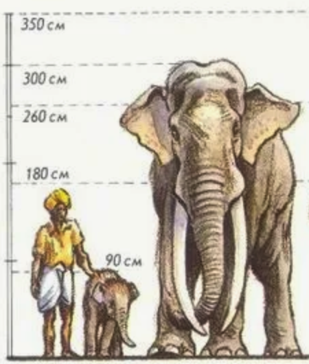

Общая информация | Слоны в искусстве | Слоны и человек
Люди использовали слонов для перевозки грузов и в военных походах. Сегодня охрана слонов связана с борьбой с браконьерством и сохранением мест их обитания.
| Критерий | Слон | Человек |
| Нос | Может поднять еду | Может понюхать еду |
| Размер | Большой как слон | Стандартный |
| Общение | Трубит | Разговаривает |
| Социум | Всегда живут семьями | Не всегда живут семьями |
